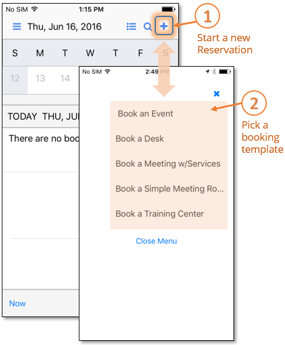
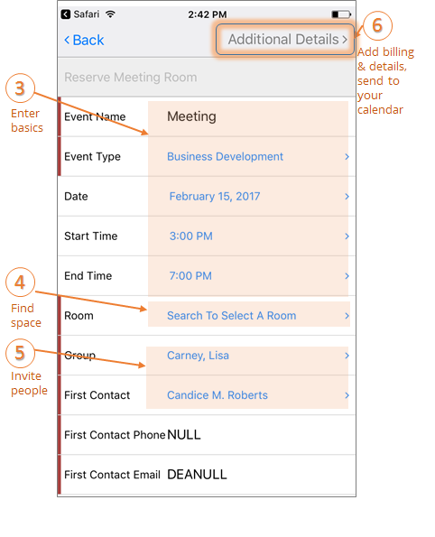
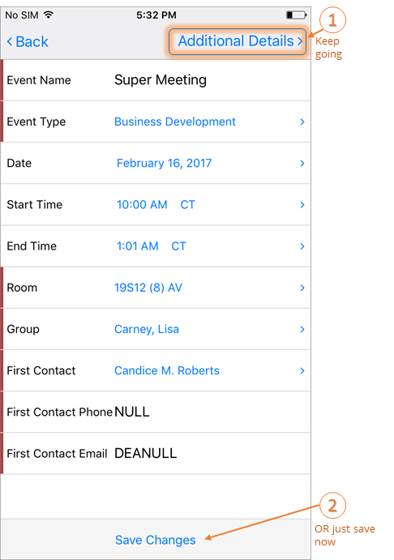
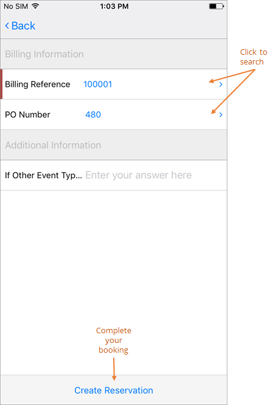
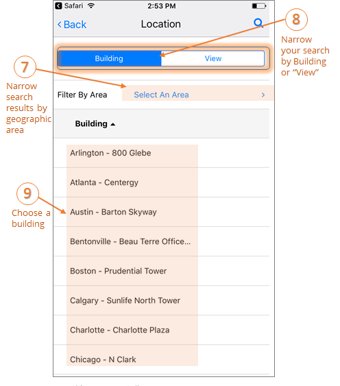

Create a Meeting
The EMS Mobile App allows users to quickly create bookings in un-managed spaces (or spaces without services and approvals), from the convenience of their mobile device.
This topic will provide information that will allow you to:
Create a booking using the EMS Mobile App
- From the Calendar screen, tap the New Reservation (+) icon.
- From the Select A Template screen, choose a booking template.

- Enter the required information for your booking (Event Name, Event Type, Room, Group, and First Contact). Fields that appear here vary depending on your booking template.

- Once you have selected a room and if the template allows, you can save and complete your reservation by clicking Save Changes. If the option is not available, continue to the next step.

- Click Additional Details to add billing and PO numbers and other information as required.

- When all required information is complete and valid, click Create Reservation to finalize your booking and return to the Home page, where your reservation will appear in the calendar.
Search for a Room
-
During the booking process, search for a room by performing the following steps:
- On the New Reservation screen, click the Room field.
- On the Find a Room screen, search and filter your room criteria by:
- Location—the geographic or physical location of the space, such as a country, region, district, etc.
- Building—the building in which the space is located.
- View—the custom grouping your Administrator might have defined to pool and classify types of space, such as Offices, Conference Rooms, Classrooms, or Campuses.
- Area—the area of a Building or View in which the space resides, such as floor, plaza, hall, or project.
- Choose a Building.

- Enter the numeric Capacity (total number of attendees) for your meeting to narrow Location search results. Rooms meeting your criteria will appear in the Search Results.

- When you click to select a room for your meeting, you will be redirected to the booking page and the room you chose will now appear on your meeting.